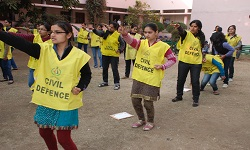

Societies
The College has active and vibrant societies for cultural activities in drama, debate, fine arts, music and environment related activities. A student is required to register herself in one of the following Societies:

1.Debating Society-The Debating society of DRC provides a forum through which students can hone their oratory and analytical skills while learning to work as a team, optimize available resources and organize exciting events, often on a mega scale. “Daulat Ram Memorial Debate” is one of the major annual inter-college event to debate on relevant issues.
2. Dramatics Society- The Dramatics society provides platform to showcase the talent of students in acting .It organizes annual college play under the supervision of famous directors. The street play team of the college actively represents the college in inter college competitions.


3. Fine Arts Society -The Fine Arts Society of the college is actively involved in various art related activities at the inter and intra college level. We organize various workshops on variety of art forms, best of waste, flower making, card making; art competitions in painting, sketching, poster making, caligraphy, oil, pastels and acrylic painting; and an annual paintings exhibition.
4. Film and Photography Society- Films are very much part of our life. They reflect the mirror image of the society and portray our culture and traditions .With this thought, the film and photography society of the College is making an effort to connect and motivate the students to do things with a difference and shoot with a camera. Apart from screening the films for students the society organizes photography exhibitions, various competitions, workshops, photowalks etc. The society also organizes various trips for the students to give an exposure to observe and learn the technicalities of handling the camera like visit to Vintage camera museum, historical monuments etc.

5. MUSIC & DANCE SOCIETY
Western Dance Society (Zenith)- “To watch them dance is to hear their hearts speak” ZENITH the western dance society of the college is an established society, renowned all over Delhi university for its coordination, Bollywood chunks and use of props. The society has represented the college in various competitions and has brought laurels to the college.
Music Society (Alahyaa)- The music society of the College, ‘Alahyaa’ was named after a morning raga, meaning beginning. Established in 2012, the society provides a strong platform to young musicians to explore their creative abilities and showcase their talent. They were also adjudged as the ‘second best music society’ by DU beat.
Classical Dance Society (Annhad)- The Classical Dance society ‘Annhad’ of the College aims to further spread the joy and wonder of the 8 Indian classical dance forms.Every fest season the society makes a sincere endeavor, participating in classical dance competitions and functions across the university of Delhi and brings back laurels to the college.
6. Gandhi Study Circle- The Gandhi Study Circle provides an active platform to the students to express diverse opinions on different topics, going beyond mere promotion of Gandhian values. It organizes lectures, seminars, plays and Quizzes centered on Gandhian thought.
7. Quiz Society - The main objective of Quiz Society is to make student believe tKnowledge is endless’ and ‘Learning is a continuous process’. It will encourage student to expand their knowledge in multidimensional areas that may or may not be related to academics but crucial for the personality development in a holistic manner. The society will organize Quizzes from time to time to help learning with joy and fun.
8. Poetry Society (IMAGISM )- “Poetry is the elixir of life.”
The bilingual poetry society of Daulat Ram college is an active organization of students who are budding poets and have a keen sense of poetic appreciation. The society organizes an annual fest—OPA, including events like kavi sammelan, Poetry writing competitions etc. Established poets have also graced the occasion in the past, making it a success.
9. Environment/Eco Club- Dhara an Eco club of dr is an club which spreads awareness about nature and environment. THe studentsmembers of the eco club get training in paper recycling growing and naturing medicinal plants and making eco friendly products. They also enjoy nature walks, visit to biodiversity parks.
It is mandatory for the students to join one of the following:
(i) National Sports Organization (N.S.O.)/(Physical Education) or
(ii) National Service Scheme (N.S.S.) or
(iii) National Cadet Corps (N.C.C.)
(iv) Cultural Activities
Co-curricular Activities
9.National Sports Organisation(N.S.O.)(Physical Education)- Physical Education Department provides sports facilities to all students of the college. They are encouraged to participate in sports activities and even represent the college in games of their interest. Sports Meet for Freshers is organised every year in first term aimed to explore sports talent among first year students, and to orient/induct them to sports culture of the college.



10.National Service Scheme(N.S.S.)- The College NSS Unit is very actively involved in the service of the underprivileged/disadvantaged sections of society, particularly the visually handicapped, elderly people, women and children. It aims at inculcating human values, dignity of labour and self- confidence and discipline among the volunteers. The main college NSS projects are Blood Donation, HIV-AIDS Awareness, Family Life Education, Functional Literacy, Help for the Visually Impaired, College Campus Cleanliness, Socio-Economic Skill Development and Leadership and Personality Development, Senior Citizens’ Welfare Project, social awareness besides helping allied agencies/NGOs. A student who puts in 120 hours of social service is awarded N.S.S. Merit certificate and outstanding volunteers are awarded special merit certificates and medals. In 2014-15, the NSS Unit also organized Swachh Bharat Abhiyan, National Unity Day and Inter-college competitions in Braille reading, writing, debate, skit, music and sports for the visually challenged students.
11.National Cadet Corps(N.C.C.)- The NCC unit of the college is very active. During training, cadets get the opportunity to participate in many adventure activities like para-sailing, paratrooping, mountaineering, horse riding, swimming, etc. In the three years of training a cadet can attend different types of camps in Delhi and out of Delhi also. After attending the camp a cadet can appear for ‘B’ or ‘C’ certificate examination. Those students who wish to join the NCC can fill up the enrolment forms during the month of August.

Other Activities
Cultural Activities
Every student is required to participate in the Cultural Activities of the college which provides ample opportunities for students to develop their potential and to express their talents in a variety of co-curricular and extra-curricular activities.
PRAGATI: WOMEN DEVELOPMENT CENTRE
“Pragati”, the Women Development Cell of the college, firmly believes in making women as strong as possible in self- esteem, personality and character. It provides a platform for students where they can give an expression to their thoughts and ideas on women empowerment. The hues and shades of the students’ creativity and talents perfectly synchronised with guidance of a dedicated team of teachers ,gives it depth and character. Pragati aims to generate awareness and educate the students on women rights,status, health and empowerment. The activities of the centre includes seminars ,workshops,lectures, debates,essay writing and poster making contests, field trips,film making ,film screenings,street plays ,graffiti,pledge walks etc. Glimpses of the activities organised by the cell ,in the last year, include,self- defence training workshops in association with woman cell of Delhi Police, collection drives in association with the NGO - “Goonj “, workshop on child sexual abuse in association with “ Rahi Foundation”, “ The Teach India Campaign”, in association with “The Times Of India and British Council”, “ I am Shakti Movement “with the “India Today Group” etc. The primary objective of the WDC is to sensitise the students and enable them to put forth their views on persisting gender discrimination and sexual violence plaguing our society today. Pragati is a tribute to the underlying spirit and resilience of a woman and its focus is on making every student in the college “ Saksham”, or “ complete “ in all respects. It is a fabric wherein the genius and prowess of students and efforts by teachers ,is woven together ,to add a tinge of “ That something “, that is enormous and inextricable !


North East Cell
The North East Cell was established in Daulat Ram College in 2014, to initiate efforts at eradicating discrimination against the people from the North East.
Enabling Unit
Enabling Unit is committed to provide assistance to differently-abled students and staff members to enable them to participate fully in the academic, intellectual, social and cultural life of the College, University and beyond by organizing workshops, talks, training programmes, cultural activities and competitions providing assistive devices like ABRAR to visually challenged students and writers during examination time.


Spic Macay
Spic Macay stands for Society for the Promotion of Indian Classical Music and Culture amongst Youth. It is a voluntary movement founded in 1977 by Prof. Dr. Kiran Seth. The movement enriches the quality of formal education by increasing awareness about different aspects of Indian heritage & inspiring the young mind to imbibe the values embedded in it. It organizes more than 4000 programs every year in school & colleges. Daulat Ram College re-opened its chapter with an orientation program addressed by Prof. Kiran Seth himself. It was followed by two performances on two separate occasions by great artistes like Padmashri Ms. Geeta Chandran ji for Bharatnatyam and Padma Vibhshan Pt. Hari Prasad Chaurasia ji for Flute recital. There was an overwhelming response on both the occasions being attended by hall packed with students; teaching & non-teaching staff from the college and many other outsiders
Student Union
Every student is a member of the College Student Union. Participation in student union activities is an opportunity for training in organisational skills and democratic leadership. Every year Elections are held in the month of August/September for the following posts for which nominations are invited from the students. (For eligibility conditions the Convener, Student Advisory Board should be consulted.) President, Vice-President, Secretary, Joint Secretary, Treasurer, Proctor, and Cultural Secretary.
The Student Union is expected to take active part in the organisation of all college functions and activities. It contributes immensely in making the campus life of the college more meaningful and memorable. The important activities organised by the Union are Freshers Talent Contest and other inter-college events. For participation in inter-college activities the students should contact the Union Office Bearers.